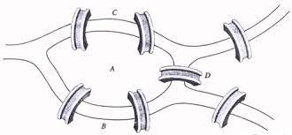

Sejarah Teori Graph
Graph sering digunakan untuk merepresentasikan sebuah objek dan hubungannya dengan objek lain. Sejarah teori graph bermula...
Situs untuk belajar teori graf
Graph sering digunakan untuk merepresentasikan sebuah objek dan hubungannya dengan objek lain. Sejarah teori graph bermula...

Graf G adalah pasangan (V(G), X(G)), dimana V(G) adalah himpunan berhingga, yang elemen-elemennya disebut titik (vertex), dan...
Titik-titik v dan w dari suatu graph adalah simpul-simpul yang adjasensi jika dihubungkan oleh sebuah garis e. Titik v dan w disebut...